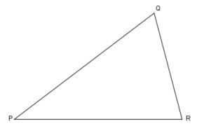
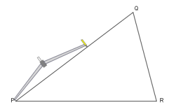
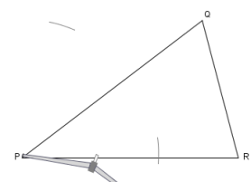
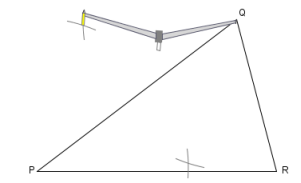
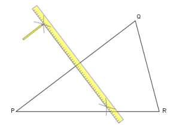
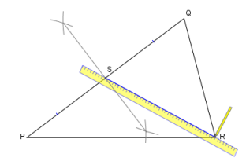
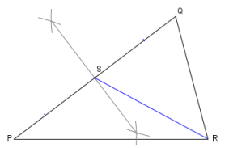

This is the step-by-step, printable version. If you PRINT this page, any ads will not be printed.
See also the animated version.
| After doing this | Your work should look like this |
|---|---|
|
We start with the triangle PQR.
The median of a triangle is a line segment linking the midpoint of a side to the opposite vertex. There are therefore three possible medians, and this shows one of them. The other two can be drawn in a similar fashion. |
 |
| In the first four steps we create the perpendicular bisector of PQ. See Constructing a perpendicular bisector of a line segment. This establishes the midpoint of a side. | |
| 1. With the compasses' point on any vertex, set the compasses' width to any medium setting. In this example, we pick point P and the side PQ. |  |
| 2. Draw an arc on each side of the line. |  |
| 3. Without changing the compasses' width, place the compasses' point on the other end of the selected side, and make two more arcs so they intersect with the first two. |  |
| 4. Draw a line between the points where the arcs cross. This will bisect the triangle side, dividing it into two equal parts. Label this point S. |  |
| We then simply draw a line from this midpoint to the opposite vertex. | |
| 5. Draw a line between S and the vertex opposite - in this case the point R. |  |
6. Done. The blue line SR is one of the three possible medians of the triangle PQR. The other two can be constructed in a similar way |
 |